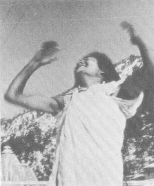

BHAKTI YOGA

The yoga which is most available to all people at all times in all situations is bhakti yoga, the yoga of love and devotion. It is the method of merging in ultimate union through the heart.
The method of bhakti yoga is dualistic in the sense that one experiences love at first in relation to something separate from oneself. The goal and natural outcome of bhakti yoga, however, is non-dualistic in the sense that the ultimate state is one in which the lover and beloved merge in One.
It is a delicate yoga to work with properly because it is only too easy to get so much reward (bliss) from the dualistic stages that one cannot leave the separateness to proceed to the unitive stage. An excellent example is presented in the life story of Ramakrishna, the Indian saint who was so in love with Kali, a manifestation of the Divine Mother, that he resisted breaking through into the Oneness. Only after his guru forced him, did he do so.
This yoga is difficult for us in the West to understand because we have used the term “love” in such a profance sense . . . that is, to reflect attachment to worldly objects or people. We speak of “loving” that food or drink or automobile or person . . . often in the same sense. We are so “action-oriented” that we think of love as “something to do.” But most people have sadly found that you can’t “make love” if love does not already exist. Meher Baba, a recent Indian saint who advocated love as the supreme vehicle said:
“Love has to spring spontaneously from within: and it is in no way amenable to any form of inner or outer force. Love and coercion can never go together: but though love cannot be forced on anyone, it can be awakened in him through love itself. Love is essentially self-communicative: Those who do not have it catch it from those who have it. True love is unconquerable and irresistible; and it goes on gathering power and spreading itself, until eventually it transforms everyone whom it touches.”
The specific object of love which concerns the bhakti yogi is the Spirit or the manifestation of the Divine . . . in anything and everything. It is the love for light or for love itself or for the Life Force or for truth or beauty. It is love for the purest manifestations of these abstractions. The roles through which this love may be expressed are many: the relation of worship or piety; the pure relationship of servant to master; the relation of friend to friend; the relation of wife to husband; parent to child; child to parent; the lover to the beloved; etc. Though the “vehicles” differ from role to role, the essence—the love—is the same stuff. In each instance what one is loving in the object of one’s love is love itself . . . the inner light in everyone and everything.
When we speak of falling in love, we might find that a slight restatement of the experience would help clarify our direction. For when you say “I fell in love” with him or her you are saying that he or she was the key that unlocked your heart—the place within yourself where you are love. When the experience is mutual, you can see that the psychic chemistry of the situation allows both partners to “fall in love” or to “awake into love” or to “come into the Spirit.” Since love is a state of being—and the Divine state at that—the state to which we all yearn to return, we wish to possess love. At best we can try to possess the key to our hearts—our beloved—but sooner or later we find that even that is impossible. To possess the key is to lose it.
Just as with every other method of coming to the Light, if it works we get attached to the method, failing to realize that it is the goals and not the method which we crave. A relationship starting out as one that awakens love can only remain a living vehicle for love to the extent that it is continually made new or reconsecrated. That is, each partner in love must always strain to see through the veils of personality and body to see the Divine Essence within—within himself and his partner. And he must come to see the veils as veils . . . as maya, the Divine Illusion, the Divine Mother . . . and worship even the veils without getting trapped into thinking them real. Such ideas are reflected in the highest marriages, or for that matter in the highest form of any relationship. Play your role in the Divine Dance, but know it to be such and worship its divinity.
Song, dance, chanting and prayer have been throughout the ages traditional forms of bhakti yoga. There are many levels at which you can participate in these rituals. At first such rituals are matters of curiosity, and you are the observer. Then you arrive at the stage of peripheral participation—a “sing along.” Then in time you become familiar with the routines and you start to identify with the process. As your identification deepens, other thoughts and evaluations fall away until finally you and the ritual become one. At that point the ritual has become the living process and can take you through the door into perfect unity. To know that these stages exist does not mean that you can jump ahead of where you are. Whatever stage you are in, accept it. When you have fully accepted your present degree of participation, only then will you start to experience the next level.
Singing and music: Most familiar to us is the use of song to open the heart. Hymns such as “Holy, Holy, Holy” or “We Gather Together To Ask The Lord’s Blessing” or “Mine Eyes Have Seen the Glory of the Coming of the Lord,” “Stand Up, Stand Up for Jesus,” “Amazing Grace”—have touched the hearts of millions with the Spirit. In India, bhajan (the singing of holy songs) has been until recent times practically the only social function in the villages. Evenings the men gather, squatting or sitting on the ground in a circle with their chillums (pipes) and a harmonium, a set of tabla (drums), perhaps a serangi or violin (stringed instruments) and cymbals . . . and they take turns singing the stories of the holy beings such as Krishna and Ram. Night after night they participate in this simple pastime, keeping themselves close to the Spirit.
It is often startling to a Westerner to realize that it is not the beauty of the voice but the purity of the spirit of the singer that is revered by these people. It was only when music was profaned that it became a vehicle for gratification of the senses. Prior to that it was a method of communion with the Spirit.
A special form of bhajan is called kirtan . . . which is the repetition in song of the Holy Names of God. Perhaps the most familiar of these in the West at present is:
HARI KRISHNA, HARI KRISHNA, KRISHNA KRISHNA,
HARI HARI . . . HARI RAMA, HARI RAMA, RAMA, RAMA
HARI HARI.
Hari can be translated as “Lord” and Ram and Krishna are names of incarnations of God.
The melody of kirtan is usually basically simple and it is only after many repetitions that the process of coming into the spirit starts to happen. Singing the same phrases over for two to five hours is not unusual for the true seeker. And you will find as you let yourself into the repetitive rhythm and melody that you experience level after level of opening.
Exercises
On the record that is included in the box From Bindu to Ojas, there are a number of examples of kirtan. Take any one of them and tape one single repetition of it onto a tape loop which you can run over and over through your tape machine. Then turn up the volume and join US.
There are many records and tapes of kirtan available (and more appearing all the time). Work with a variety of these until they have worked deeply into your heart.
When you have an opportunity to join with others in the singing of kirtan . . . even a group of amateurs . . . do it. Remember it is inner singing . . . it is the spirit that you bring to it that counts.
Potent Quotes
“God respects me when I work
But he loves me when I sing.”—Tagore
“Love me, my brothers, for I am infinitely superfluous, and your love shall be like His, born neither of your need nor of my deserving, but a plain bounty. Blessed be He.”—C.S. Lewis
“Bhakti, love of God, is the essence of all spiritual discipline . . . Through love one acquires renunciation and discrimination naturally.”—Ramakrishna
“Oh thou who art trying to learn the marvel of love from the copybook of reason, I am very much afraid that you will never really see the point.”—Hafiz
“To savour in our hearts in a certain manner and to endeavor to experience in our souls the power of the Divine Presence and the sweetness of heavenly glory, and this, not only after death but even in this mortal existence. This is most truly to drink of the gushing fount of the Joy of God.”—Institution of the First Monks
“Love without attachment is light.”—N.O. Brown
“God alone is Real and the goal of life is to become united with Him through Love.”—Meher Baba
“If you have love you will do all things well.”—T. Merton
“Love suffereth long, and is kind; love envieth not; love vaunteth not itself, is not puffed up, does not behave itself unseemly, seeketh not its own, is not provoked, taketh not account of evil; rejoiceth not in unrighteousness, but rejoiceth with truth; beareth all things, hopeth all things, endureth all things. Love never faileth.”—Paul of Tarsus
LOVE in the World’s Great Religions:
Christianity: “Beloved, let us love one another, for love is of God; and everyone that loveth is born of God, and knoweth God. He that loveth not, knoweth not God, for God is Love.”
Confucianism: “To love all men is the greatest benevolence.”
Buddhism: “Let a man cultivate towards the whole world a heart of Love.”
Hinduism: “One can best worship the Lord through Love.”
Islam: “Love is this, that thou shouldst account thyself very little and God very great.”
Taoism: “Heaven arms with Love those it would not see destroyed.”
Sikhism: “God will regenerate those in whose hearts there is Love.”
Judaism: “Thou shalt Love the Lord thy God with all thy heart and thy neighbor as thyself.”
Jainism: “The days are of most profit to him who acts in Love.”
Zoroastrianism: “Man is the beloved of the Lord and should Love him in return.”
Baha’i: “Love Me that I may love thee. If thou lovest Me not, My love can no wise reach thee.”
Shinto: “Love is the representative of the Lord.”